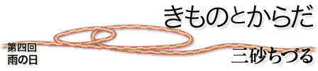

|  |
| 最近レインシューズとか雨靴をはく人を都会ではほとんど見ない。履き替えの靴を持つのも面倒だし、着ている服と似合わないし、ということで、ほとんど普通の靴のままで出かけている人が多いと思う。わたしもそうしていたのだが、雨の日はいつも不快だった。靴はすっかり濡れ、足も濡れてしまう。サンダルやミュールなどをはいていれば、足はびしょぬれである。そしてすべる。本当に不快だった。思えば、靴が濡れ、足が濡れるのは、靴の底と地面がほとんどくっついているのだから当たり前だ。イギリスにも長く住んだが、濡れた靴で不快に感じる、ということがあまりなかったのを思いだす。そういえば、日本の梅雨や大雨のようなものがほとんどなかった。一年中はらはら雨は降っているが、レインハット程度でしのげるような雨が多いのだった。梅雨が来て、集中豪雨が来て、台風も惜しみなくやってきて、とにかくざあざあ雨が降る日本とはちがうのだった。 さて、きものを着始めたわたしは雨が降ってもきものを着たい。きものや帯は雨に決してさらされてはいけないものだし、草履も雨には弱い、ということくらいはさすがに知っていた。別装備が必要なわけである。わたしは毎日きものを着るのだから、天気によって着られない日があるのは悔しいではないか。何をさておき、雨の準備をしなければならない。 だから、まず雨下駄を買った。履物屋さんで雨下駄を頼むと、利休下駄（2枚薄い歯が平行についている）をすすめられたものの、「この下駄で大丈夫ですか？最近はこの下駄で歩けない方が多いのですが」とおそるおそるいわれた。当時、わたしは、ぜんぜんきものを着そうにない雰囲気が、立ち居振る舞いからにじみ出ていたに違いない。そんな人が突然あらわれ、｢下駄をくれ｣というのだから、履物屋さんの対応も無理もない。その場でちょっと歩いてみて、大丈夫そうですね、ということで売っていただいた。確かに利休下駄で歩くには、靴を履いているときとはまったく違うバランスが必要である。草履の歩きやすさともまた違う。きものを着て草履を履いているときの重心よりも、さらに、すこし重心が後ろに移っているように感じる。利休下駄で上手に歩けるときは、よりいっそうからだの中心が決まっていて、さっそうと動いていけるように感じる。 きものも帯もぬれてはいけないから、雨コートを着る。すそまで十分にカバーしてきもののすそが汚れないものがよい。人によっては、雨コートを着るときは、すそをはしょって腰紐でとめておくことを勧めておられる人もあるくらいだ。友人にもらった雨コートは十分に丈があり、大丈夫のようだ。 雨コートと下駄、これで万全。どんな天気でもきものがきられる用意が整った。この下駄と雨コートはいったいどんなふうになるのか、わくわくと楽しみで雨を待つ。いざ、雨。勇んで下駄を履き、コートを着て出て行った。 これが快適なのである。下駄を履いていると、足がまったく濡れない。買った下駄には前にビニールのカバー（爪掛けという）がついており、つま先がぬれないようになっている。それでも雨が降ったら、下駄が汚れるだろうなあ、雨にぬれるだろうなあ、爪掛けをしていても、足袋の周囲はびしょぬれになって、足袋も替えないといけないのだろうなあ、と思っていた。ところがまったく濡れていなくて、足袋を替える必要もないことが多い。これは実は当たり前なのだ。下駄は地面から離れている。定規で測ってみたら、地面から足の裏まで5センチある。また、下駄では、7ミリx 8センチの長方形の歯が4本、地面と触れているだけである。最低限の接地面積で、地面とふれているので、雨の影響は最小限となる。靴底全面が床についているよりも、ずっとすべりにくくなる。きもののすそは当然、足袋よりも上だから、地面から測るとかなり上のほうにあるので、おもったよりずっと、濡れたり、はねがあがったり、しにくい。雨の日は、短めにきものを着るから、下駄の接地面から測れば10センチくらい上にあると思う。ヒールにパンツ姿だとすそがすぐ濡れてしまったのは、この10センチがないわけだから、至極当然のことだったといわねばならない。 足袋だけしか履いていないから、湿気がこもることもなければ、足がむれることもない。なんとも快適である。雨の後、伊豆の海岸のぬかるみを歩かねばならないことがあった。特にハイキングコースでもないので、みな、普通の靴をはいている。周囲で一緒に歩いている女性はつるつるすべり、足元もどろどろになって、気の毒だった。利休下駄のわたしは、ちっともすべらない。下駄の歯がしっかりと大地をつかまえてくれている。しかし、さすがにぬかるみの石だらけの道をあるいたあとは、下駄の底のゴムは無残に引きちぎれ、木の部分まで、すりへってしまった。 かくしてわたしは草履だけでなく、下駄も酷使してしまっているのであるが、ともあれ、今年は、梅雨も快適にすごせる、と思うと、それだけでうれしい。 三砂ちづる（みさご・ちづる） 疫学者 |